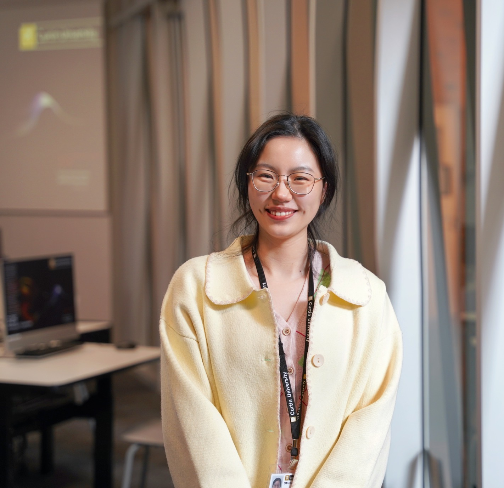

Lingxue (Lucia) Zhan
Address: Kent St, Bentley WA 6102
Email: lingxue.zhan@curtin.edu.au
About Me
Hi, I am a third-year Ph.D. student in the Social Media Research Lab @ Curtin University, working with Prof. Mingming Cheng. My research interests lie in Social Media, Tourism Marketing, Image Analytics. I obtained my Master of Economics at the Shenzhen University, under the supervision of Prof. Liang Zhu.
News
🥳 2024 Jan: Receive the Best HDR Student Paper Award!
🥳 2023 Dec: One paper got accepted by Journal of Travel Research!
🥳 2023 Jun: One paper got accepted by Tourism Management!
🥳 2023 Feb: One working paper got accepted by CAUTHE 2023!
🎉 2022 Sept: I join SMRL Lab @ Curtin Univ. as a Ph.D. student!
Publications
-
Tourism destination stereotypes and generative artificial intelligence (GenAI) generated images
Jingjie Zhu, Lingxue Zhan, Jie Tan, Mingming Cheng
Current Issues in Tourism, 2024. (Q1, ABDC: A)
[Paper] -
Projected Destination Image of Beijing on Instagram: A Sequential Research Design
Lingxue Zhan, Mingming Cheng, Jingjie Zhu, Xiaowei Wang
Journal of Travel Research, 2023. (Q1, ABDC: A*)
[Paper] -
Progress on image analytics: Implications for tourism and hospitality research
Lingxue Zhan, Mingming Cheng, Jingjie Zhu
Tourism Management, 2023. (Q1, ABDC: A*)
[Paper] -
Projected destination image of Beijing: An image analytics approach
Lingxue Zhan, Mingming Cheng, Jingjie Zhu.
CAUTHE, 2023.
[Paper] -
Is sustainable development reasonable for tourism destinations? An empirical study of the relationship between environmental competitiveness and tourism growth
Liang Zhu, Lingxue Zhan, Shaobo Li.
Sustainable Development, 2021. (Q1)
[Paper]
Teaching
-
MKTG2006 Managing Social Media Platforms
Teaching Assistant
[Link], July 2024. -
Managing Social Media Crises - A Case Study of Singapore Airlines
Mingming Cheng, Jie Tan, Lingxue Zhan
[Link], Sept 2024.
Awards
- Best HDR Student Paper Award, Feb 2024.
- IFITT Journal Paper of the Year Award (2nd Place), Jan 2024.
- Curtin CSC Top Up Scholarship, Since 2022.
- China Scholarship Council (CSC) Scholarship, Since 2022.
- Outstanding Graduates at SZU, June 2022.
- China National Scholarship, Dec 2020.
- Tencent Founder Innovative Scholarship, Dec 2020.
Professional Service
- Co-organize the Australia - Japan Tourism Symposium, Dec 2022.
- Co-investigate the CIET Energy Transition Project, Jan 2025.
Reviewer
- Journals: Tourism Management, Journal of Hospitality and Tourism Management
- Conferences: CAUTHE, ANZMAC